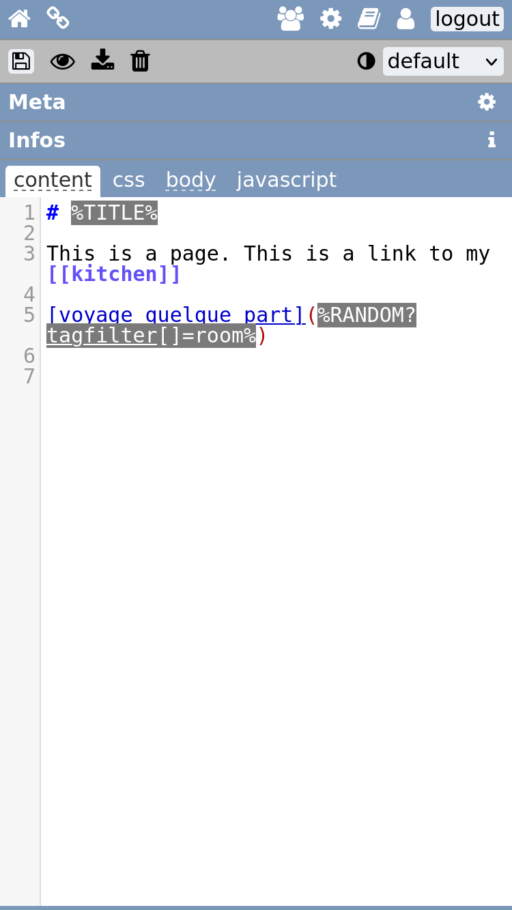
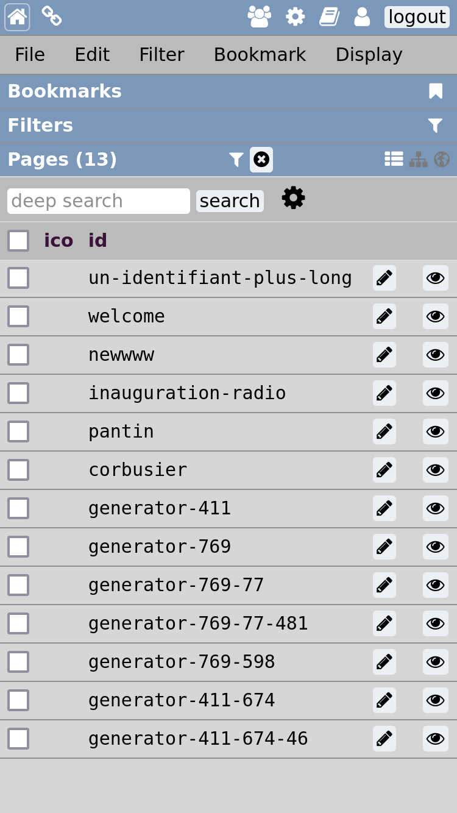

🧠Presentation #
W is a lightweight CMS tool written in PHP, meant to help you design a surprising website using it's unique approach.
It's targeting artists, or experimental projects.
The project was initiated in 2018 by Vincent Peugnet which is an amateur computer scientist.
It's developed on a voluntary basis and is licensed under AGPLv3.
W is a wiki. Wikis are a type of Web building tools that encourage quick and easy edit of pages.
It's also inspired from personnal knowledge management (PKM) theory.
W is at the intersection of a website editor and a note-taking tool.
This is both its advantage and its drawback: it can do both, but is limited in each direction.
That being said, W has some interesting features and a specific approach, that might interest some strange web builders.
✨ Technical highlights
- Lightweight
- Easy to edit on mobile.
- Use standards to build your website: Markdown, HTML, CSS and Javascript.
- Multi users
- Flat file database
- Fully functionnal without javascript
🚧 Limitations
The interface and user manual is only available in english.
W is not suited for big projects:
it has never been tested with a large page quantity (more than 1000 pages).
It's also not recommended for multi-language websites.
W is not version control friendly.
📷 Screenshots #
Desktop

Home interface
The home interface, is where editors can see all their pages. You can apply filters to view your pages. Those sames filters can be used to generated codes that can be pasted in the pages to create list of pages.
Edit interface
Edit the content of a page. A side panel is used to edit metadatas.

Media manager
Upload images from your device or from an URL. Create folders, move and rename your media files.
Mobile interface
 W tries to be comfortable on mobile.
🔩 Installation #
Requirements :- Apache server
- PHP >=7.4.0 and the following extensions:
curlmbstringxml
💡 W can run in a domain subfolder.
Download the lastest W version, to use on your server:
📦
download zip file
Or install it using git:
🎋
https://github.com/vincent-peugnet/wcms.git
Then, type
make
to "build" the app.
🤙 Contact #
📬 Email
Feel free to email me for any question or sugestion.
vincent+w@club1.fr💬 Matrix
There is a Matrix Room, feel free to ask questions in english or french.
Matrixw-cms:club1.fr
- ➡️ continue reading: usage
- â¬†ï¸ back to top